Action Vacation - Тур-лидер / Гид (активные туры по Бали)
09.2024 - 09.05.2026 (1 год 8 месяцев)
Период: сентябрь 2024 - 9 мая 2026 (почти 2 года)
Формат: 12-дневный активный тур по 3 островам (Бали → Нуса-Пенида → Ява)
Роль в туре: единственный тур-лидер и гид (без второго гида), работа в связке с водителем
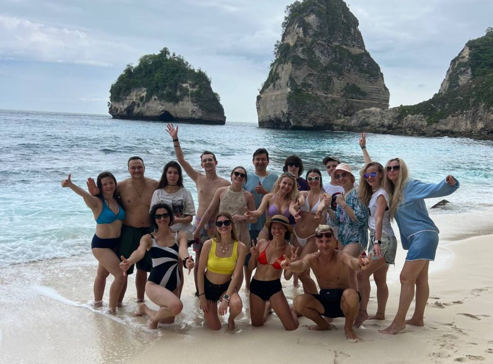
Прощальный пост команды Action Vacation
В последний день моей работы команда опубликовала во внутреннем рабочем чате прощальный пост:
«Почти 2 года назад Артур пришёл в AV тур-лидером на Бали, и за это время успел провести 29 туров и показать остров более чем 400 туристам.»
«Артур очень быстро стал своим человеком для всей команды. Тем, кто всегда приносил лёгкость, энергию, смешные истории и ощущение, что всё обязательно получится.»
«Спасибо тебе за все эти годы рядом. За вклад, за заботу о людях, за атмосферу на звонках и в чатах, за поддержку команды и за огромное-огромное количество счастливых туристов.»
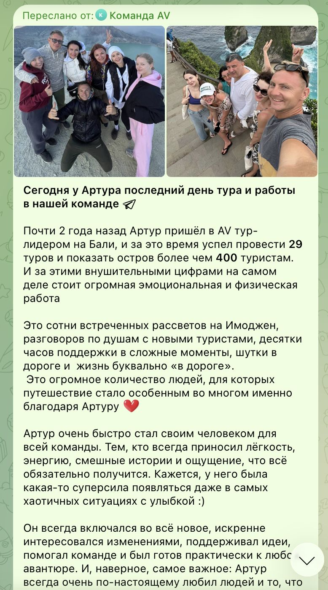
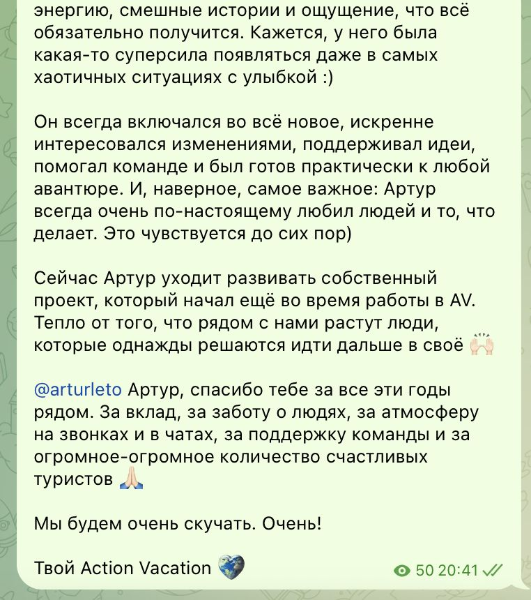
Цифры и масштаб ответственности
- 29 туров проведено (по данным компании)
- 400+ туристов (по данным компании)
- Размер группы: 2-16 человек (среднее ~8)
- Частота: 1-2 тура в месяц
- Логистика: 6 отелей за тур, регулярные переезды, ежедневный тайминг
- Режим работы: с раннего утра (обычно с 6:00) до вечера, постоянная координация
Что это говорит о качествах
- Выносливость и дисциплина: стабильная работа в режиме «вахты» много месяцев подряд
- Надёжность: большой объём людей и туров без срывов программы
- Управление процессом: контроль тайминга и перемещений как ключевая ответственность
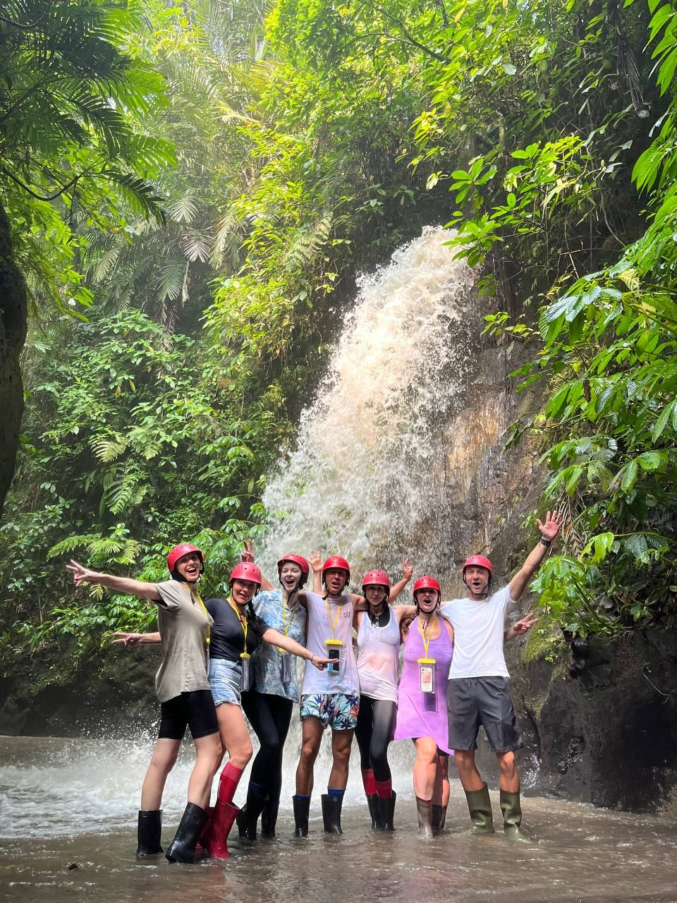

Моя зона ответственности в туре
- Встречаю гостей в первом отеле и довожу до финального трансфера в конце тура
- Я - лицо компании для гостей: все вопросы идут через меня (организация, комфорт, бытовые и нестандартные запросы)
- Провожу вводный организационный блок в первые дни: правила, структура тура, безопасность, ожидания
- Веду группу по локациям как рассказчик: объясняю, ориентирую, отвечаю на вопросы, создаю атмосферу
- Контролирую тайминг и дисциплину группы: правила опозданий, помощь с такси при необходимости
- Регулярно решаю мелкие и средние проблемы на месте: номер/сервис/неисправности/коммуникация с персоналом
- Веду ежедневные отчёты руководству по итогу дня: выполнение задач, подрядчики, погода, настроение группы, замечания
Что это говорит о качествах
- Ответственность и самостоятельность: весь клиентский опыт «держится» на одном человеке
- Ориентация на сервис: быстрое решение проблем без лишнего шума
- Проактивность: я не жду, когда станет плохо - я заранее проговариваю, предупреждаю, структурирую
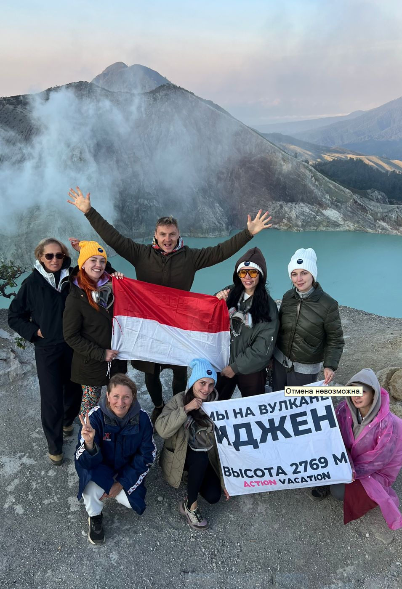
Коммуникация и лидерство в группе
- Мягкий лидер по стилю, но строгий в ключевых точках (тайминг, безопасность, дисциплина)
- Конфликты в группе разруливаю спокойно и быстро (за всё время были только редкие ситуации, решались без эскалации)
- В дороге работаю как ведущий: микрофон в автобусе, короткие истории, юмор, разрядка атмосферы
- На активных локациях - инструктирую и организую группу, иногда провожу разминку/подготовку
Что это говорит о качествах
- Эмоциональная устойчивость: сохраняю ровный тон, даже когда люди повторяют вопросы по кругу
- Лидерство без давления: умею удерживать рамки и при этом не ломать настроение
- Публичная коммуникация: уверенно говорю на группу и удерживаю внимание
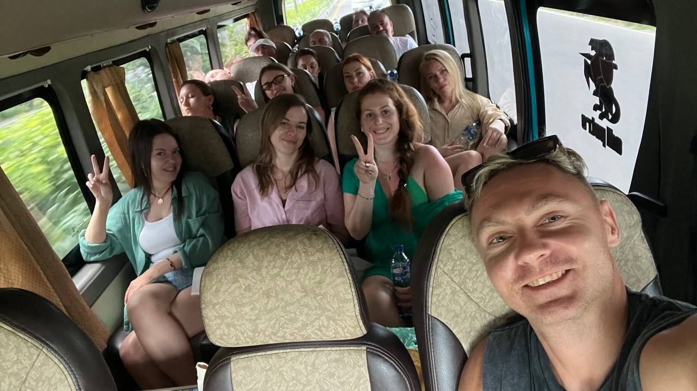

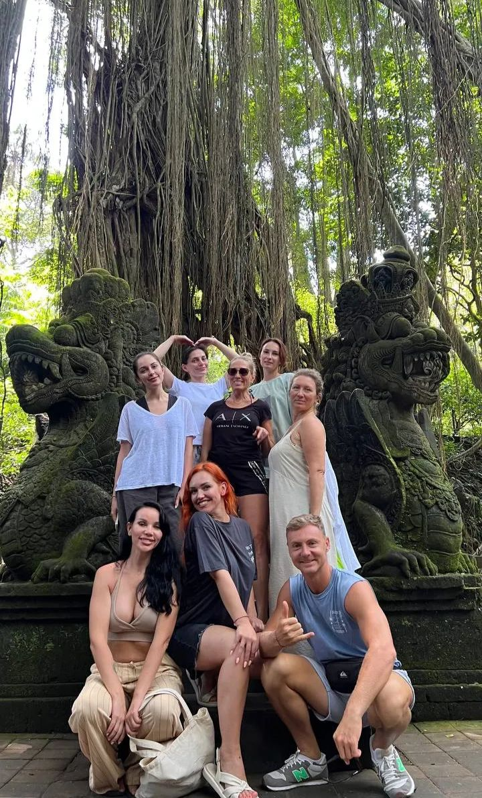
Системность и “встроенные процессы”
- Более 100 заготовленных сообщений для тура: утро/план/инструкции/рекомендации/точки/рестораны/отели/рекомендации
- Использую отложенные сообщения и структуру «плана на завтра», чтобы туристы проснулись и сразу понимали действия
- Встроенный контроль: туристы ставят реакцию на утреннее сообщение, чтобы было понятно, что они на связи
- Собираю фидбэк по ходу тура индивидуально 1-на-1, чтобы человек мог честно сказать, что не нравится, и это можно было поправить в процессе
- Сделал личный “справочник-меню” в Telegram: навигация по дням и сценариям, быстрый доступ к нужной информации
- Участвовал в улучшении общих текстов/скриптов для тур-лидеров: редактирование формулировок, улучшение читаемости, точности и подачи
- Часть подготовленных мной материалов была внедрена во внутреннее обучение тур-лидеров
Что это говорит о качествах
- Системное мышление: превращаю хаос в понятные инструкции и повторяемые процессы
- Внимание к деталям: довожу текст/подачу до качества, которым можно пользоваться всей команде
- Улучшение продукта: не просто “вёл тур”, а усиливал стандарты компании
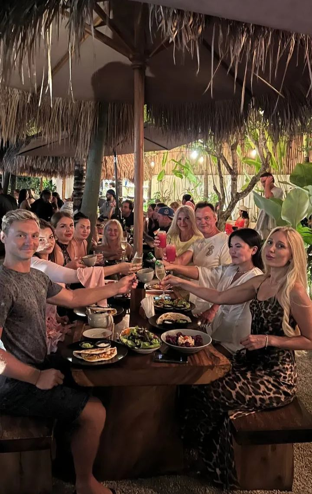
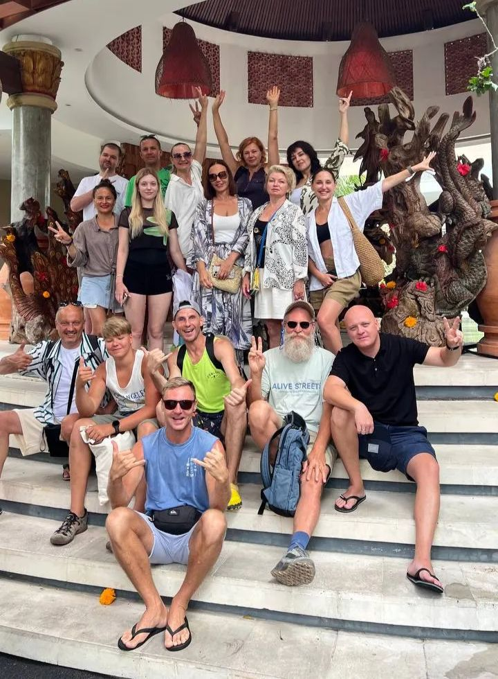
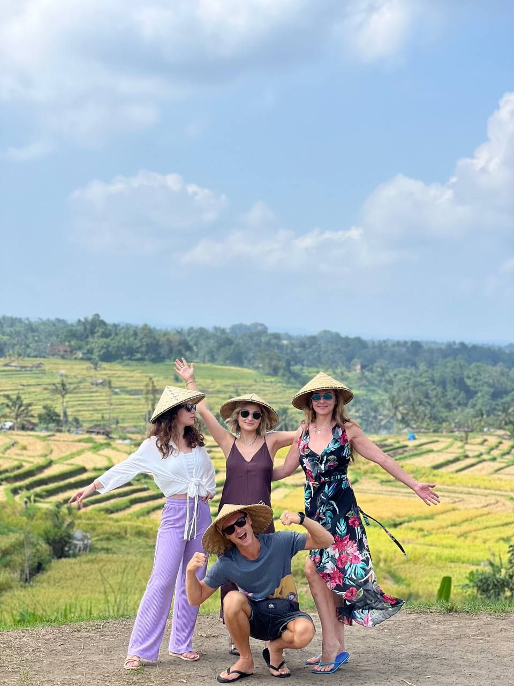
Риск-менеджмент, ответственность за безопасность и зрелость в ЧП
Кейсы (коротко)
1) Перелом руки на квадроциклах
Переворот в рисовом поле. Быстро среагировал, вытащил людей из под квадроцикла, организовал помощь и дальнейшие действия, держал связь, обеспечил передачу вещей и поддержку. Итог: участнице сделали успешно операцию, а группа продолжила тур без срыва.
2) Травма колена на квадроциклах (швы)
После случая ввёл более жёсткое правило: новичкам - только в начале трассы, запрет на “докататься в конце”, чтобы не ловить ошибки на "разогретой скорости".
3) Спасение на водопаде (человек в алкогольном опьянении начало утаскивать течением)
Среагировал моментально, вошёл в воду без подготовки, догнал, стабилизировал и вернул в безопасную зону. Итог: человек без травм, предотвращён сценарий с тяжёлыми последствиями.

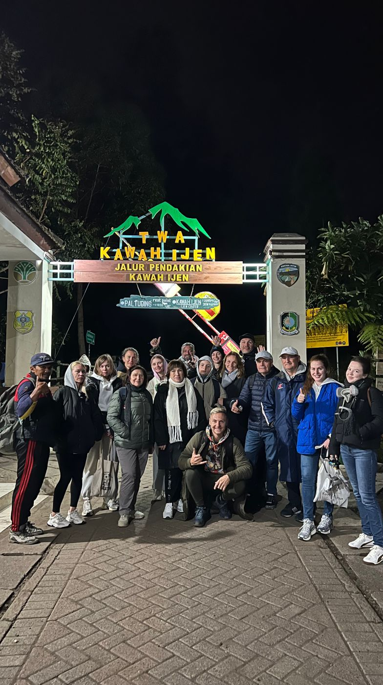
Клиентский сервис и забота “в мелочах”
- Туристы обращаются ко мне по всему спектру вопросов: от бытовых мелочей до нестандартных ситуаций
- Помогаю с локальными задачами, где туристам сложно самим: eSIM, онлайн-оплаты местной картой, покупки/билеты на мероприятия в свободное время
- Если туристы забывают вещи в отеле/бич-клубе - организую доставку забытых вещей до клиента (по согласованию и за оплату)
Что это говорит о качествах
- Ориентация на результат: довожу вопрос до решения, а не просто “даю совет”
- Забота без инфантильности: помогаю, но не разрушаю дисциплину группы и тайминг


Контент и “вау-эффект впечатлений”
- За тур создаю примерно 500-2000 фото/видео (iPhone)
- Снимаю так, что туристы регулярно благодарят отдельно за фото
- Делал кадры, которые используются компанией в соцсетях
Что это говорит о качествах
- Эстетика и внимание к эмоциям клиента: понимаю, что люди увозят не только поездку, но и память
- Умение усиливать продукт: добавляю ценность, которая повышает впечатление без дополнительных затрат
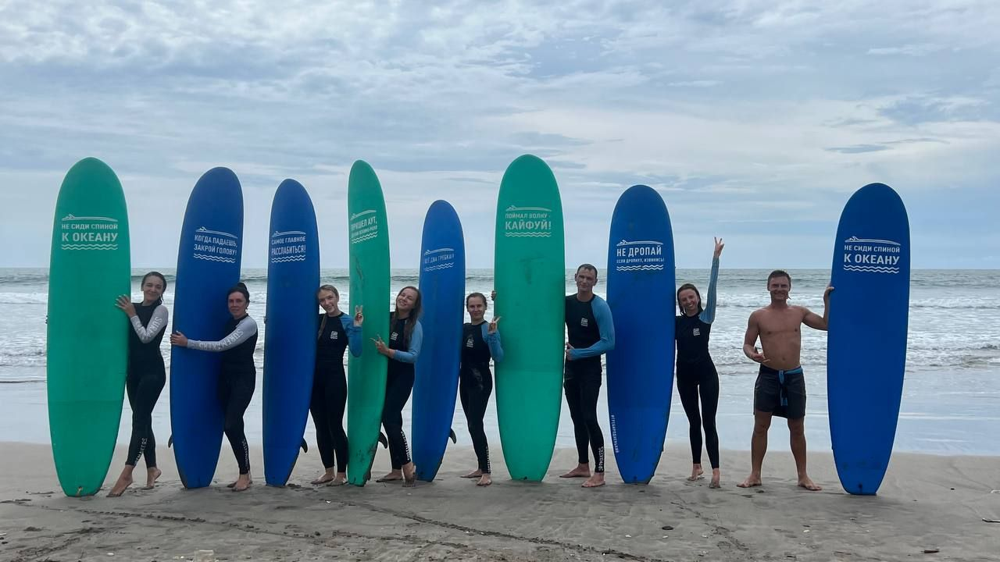
Языки и кросс-культурная коммуникация
- Тур ведётся на русском языке
- На месте постоянно взаимодействую с индонезийцами и подрядчиками: английский + базовый индонезийский
Что это говорит о качествах
- Гибкость и адаптация: умею решать вопросы в незнакомой среде и на разных языках
- Коммуникационная уверенность: договариваюсь и получаю результат, а не “теряюсь”
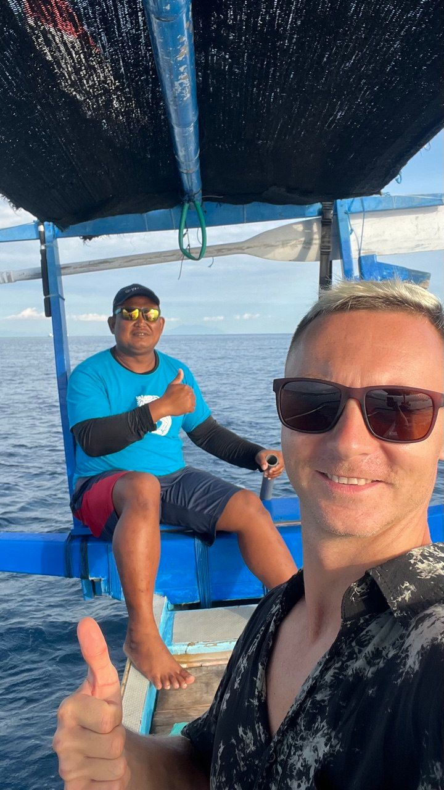
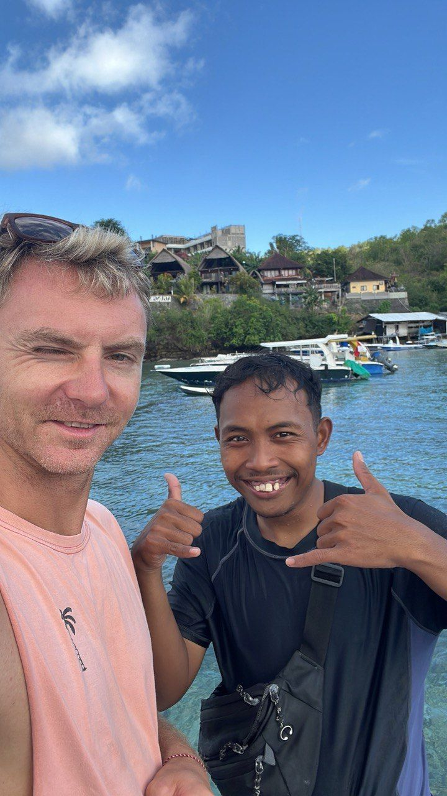


Границы ответственности на данной должности
- Не управляю бюджетами тура, входными билетами и оплатой активностей (это зона главного водителя)
- Бронирования отелей/ресторанов и овербукинги решает удалённый куратор
- Моя ответственность - операционное ведение тура, люди, тайминг, сервис, безопасность, коммуникация и качество опыта
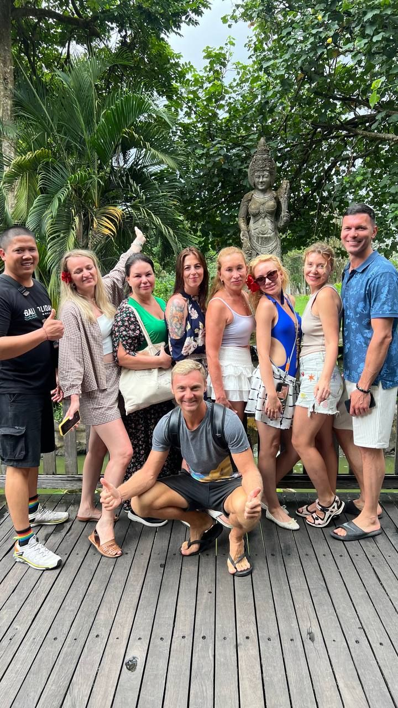


Социальное доказательство и качество работы
- Стабильно высокие оценки по туру и по работе тур-лидера: 9+ / 9,2 / 9,5 (в зависимости от тура)
- Есть 20+ текстовых отзывов, видео-отзывы, включая персональный видео-отзыв от англоговорящего туриста
Что это говорит о качествах
- Стабильность качества: это не разовый успех, а повторяемый результат
- Доверие людей: готовность давать персональные отзывы - признак сильного человеческого контакта
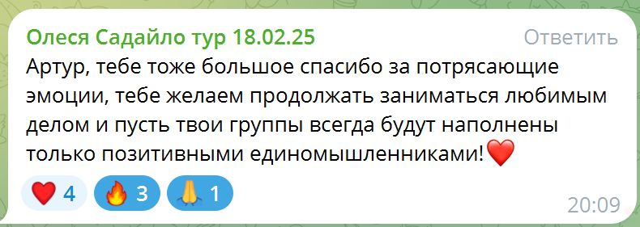


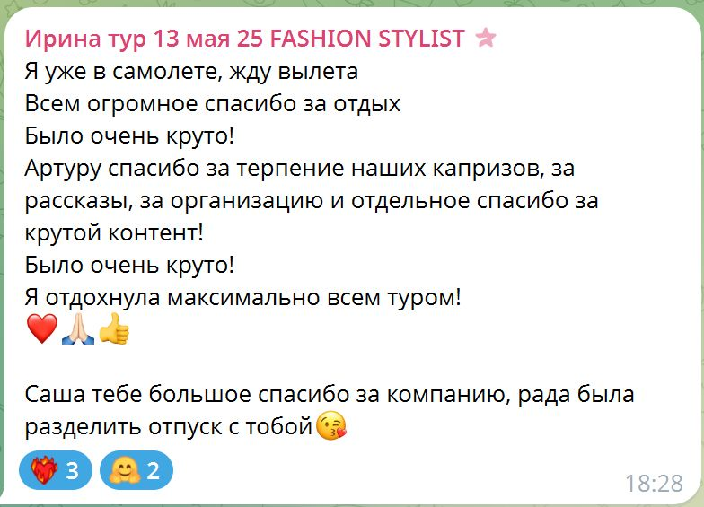
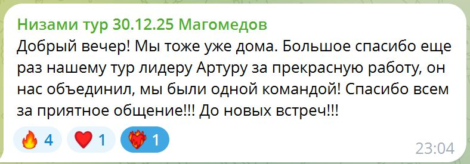
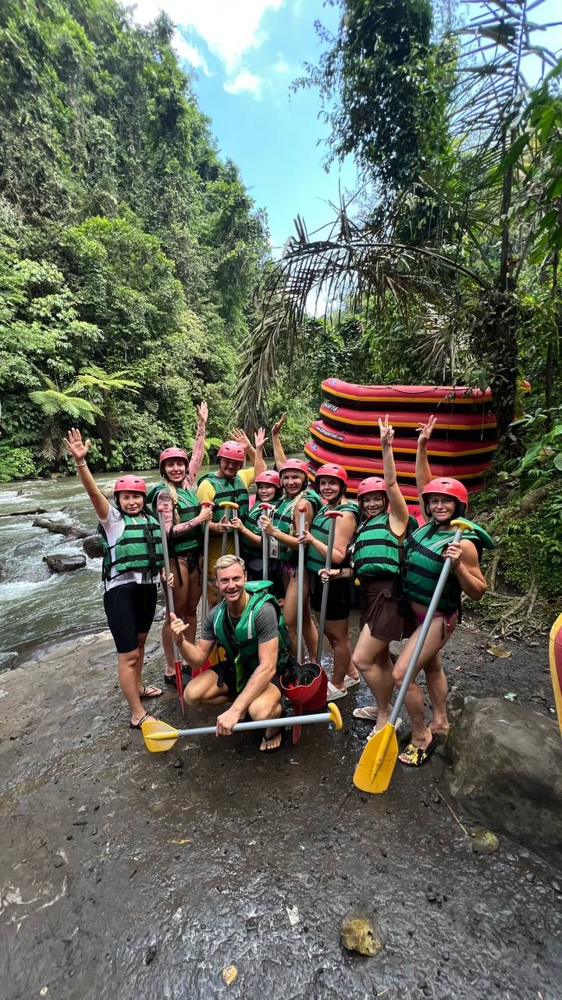
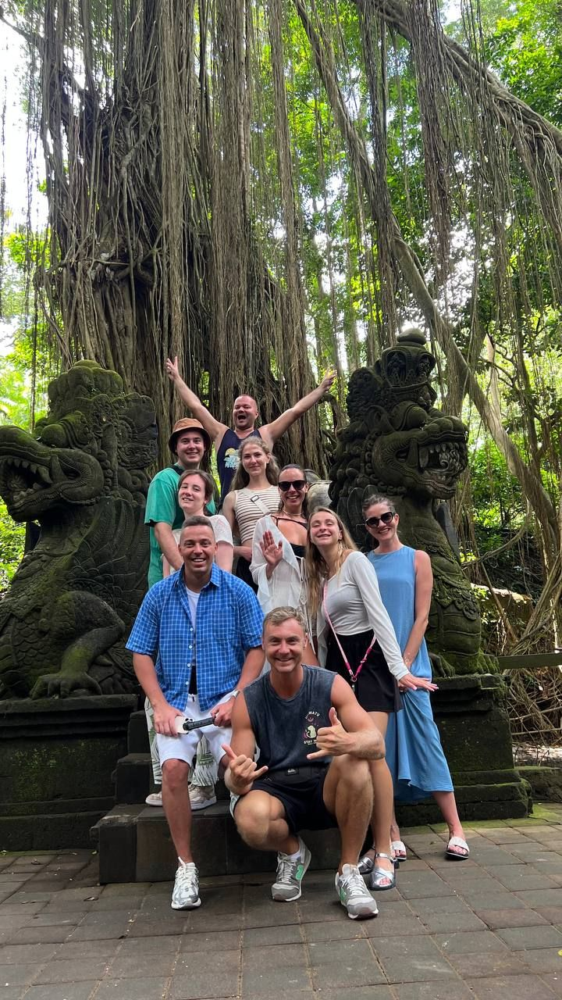
Ключевые личные качества (кратко, как “портрет сотрудника”)
- Позитивный и создаю атмосферу: люди расслабляются и вовлекаются
- Стрессоустойчивый и спокойный: одинаково корректно реагирую на повторяющиеся вопросы и форс-мажоры
- Ответственный и надёжный: держу процесс “гладко”, без провалов и паники
- Системный: превращаю опыт в инструкции, шаблоны, меню, улучшения для команды
- Решительный в кризисе: умею действовать быстро и безопасно, когда ставки высокие


Я - человек, который способен взять на себя живой процесс с людьми и довести его до результата: спокойно, системно, с высокой ответственностью за безопасность и сервис. Мой стиль - мягкое лидерство с чёткими рамками, сильная коммуникация и умение держать качество в длительной нагрузке и в форс-мажорах.
Видео отзыв на английском языке от Bilal после тура на Бали 18 февраля - 1 марта 2025
https://youtube.com/shorts/lvzGTbrKXQU?feature=share
← Вернуться к резюме